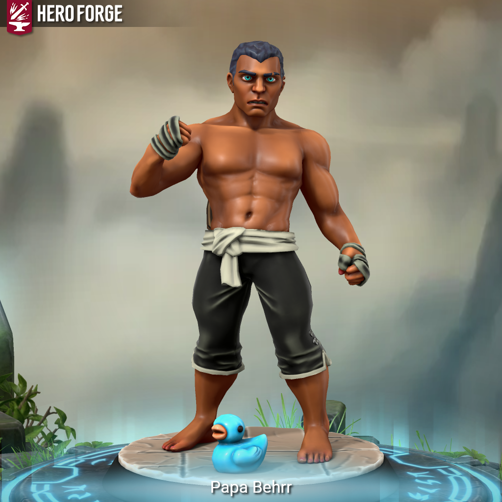

Cornelius Behrr - Is This Anything?

Meet Cornelius “Papa” Behrr
Three hundred wins, but one loss that doesn’t show up in any record book.
Papa Behrr had been fighting his whole career. He was good at it. He trained hard, he fought clean, and he was respected. Then one day, cooling down at the gym, he spotted a woman training across the room. Elvish. Striking. Moving like someone who had been in more fights than she’d ever admit. He introduced himself. She suggested a walk.
For hours they talked – about fighting, about family, about the lack of it. Somewhere along the way she pulled out a staff, plain gold and wood, and balanced a stone above it. Then a leaf on the stone. Then a larger stone on the leaf. All of it spinning, hovering, effortless.
As Papa watched, Lucia reared back with her free hand and knocked him cold.
He woke up alone. No pack, no hat, no shirt, no rings, no shoes. Just his pants and the memory of every detail – her long dark orange hair, her obsession with the Aqumore Archipelago, the tattoo on the back of her left hand, between thumb and forefinger: “LK.”
He fell apart after that. Stopped fighting, started drinking. Then started drinking seriously. It was somewhere in a blackout that the decision made itself: find her. He doesn’t know yet if it’s for revenge or something worse. He just knows he has to look her in the eyes one more time.
Cornelius “Papa” Behrr is a Human Fighter – a career boxer with over three hundred professional wins and one very personal loss he can’t let go of. He fights with his hands, his feet, and the kind of stubborn endurance that only comes from spending decades getting hit and getting up. He is warm, steady, and easy to underestimate – right up until he isn’t.
#iTA #isThisAnything #DnD #TTRPG #Homebrew #CharacterIntro #Fighter #PC